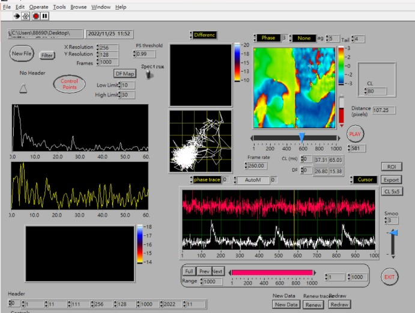
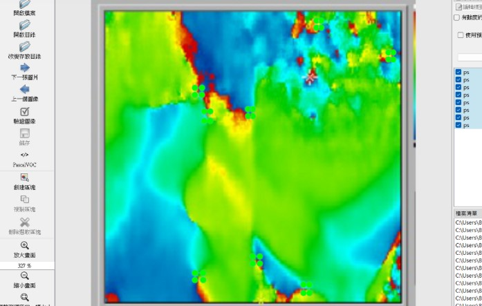

資料來源
●Optical Mapping（光學映射） 是一種利用光學技術記錄和分析生物組織（尤其是心臟組織）電活動或其他動態現象的技術。 ●應用於心臟研究:在心律失常研究中，光學映射能記錄心肌細胞的動作 電位傳導和再極化過程，幫助識別和定位心律不整的發生點及傳導異常。 ● 技術特點: 染料標記：使用電壓敏感染料標記心肌細胞膜的電位變化。 光學記錄：利用高速相機捕捉心臟表面的電活動變化。 收集資料●將影片丟入並擷取圖片,擷取 7960 張心臟影像 Optical Mapping - Phase Map 呈現平台 PS標註<
●使用LabelImg對每張影像進行相位奇異點的標註(VOC格式)，標註後命名ps標記圖檔共 6089 張 YOLOv7 模型以高效能和精準物件偵測聞名，適合用於 ps 的自動化標註與分析，能滿足快速診斷的臨床需求。 |
||